Thinking Toys (or Games) for Commoning
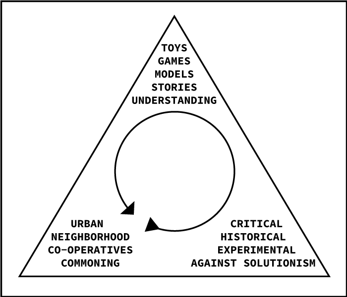
The sustainable use and the organisation of common resources is highly complex. With the focus on alternative,
utopia-inspired
urban neighbourhood initiatives in Switzerland this research project proposes experimental design and inquiry into
media-based
thinking tools which will help to better illustrate, demonstrate and negotiate the complexity of these sharing
processes.
Commons are sustainably and collectively managed resources, such as food, or communication infrastructures,
such
as Wi-Fi. Commoning, then, is the activity of sharing these resources. The aspiration formulated throughout
numerous
alternative, utopia-inspired projects that seeks to design infrastructural aspects of urban everyday life in an
alternative
and autonomous way, through commoning, raises several questions. Since, based on the high level of complexity that
(occasionally)
comes with the shared use of resources, for the individual community member it is often difficult to estimate his
or
her own action and consequences to the very last detail. Especially when it comes to unpredictable, complex
adaptive
processes, he or she can no longer completely grasp them intuitively nor follow them without the help of
media-based
thinking tools — such as computer-based models or scenarios — which make those processes not only visible but also
comprehensible.
For this reason, a mobile software application will be developed and tested in close collaboration with the
members
of three Swiss urban neighborhood projects: NeNa1 in Zurich, LeNa in Basel and Warmbächli in Bern. We will create
playful
simulations and design new thought-spaces for commoning. Our aim is to enable alternative and engaging ways for
future
social participation and transformation processes.
The four-year project, which combines methods from humanities, social science and design inquires the following
central
question: How could an experimental and community-based approach to design and development of a digital game system
stimulate
reflection on the intuitively incomprehensible complexity of commoning, make it more understandable and negotiable
through
playing and gaming?
Mid-Feb 2019, Micro Residency 1b
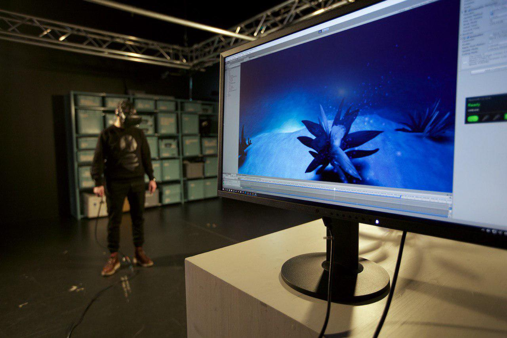
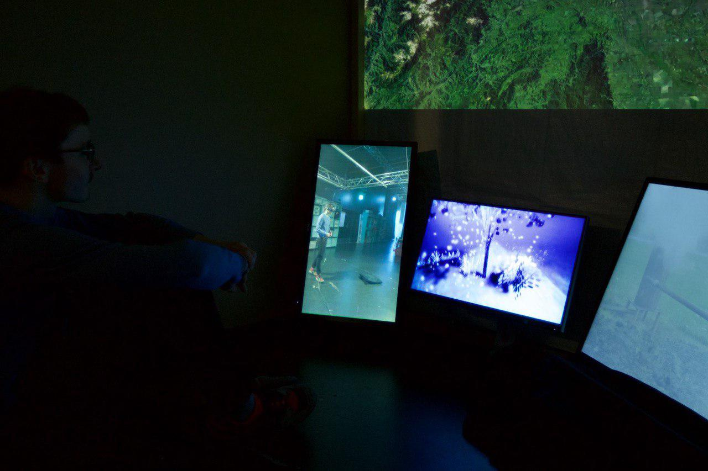
Designers Sarah Hermanutz and Andreas Rau visited our lab and project for a week. Together with Michaela they were working on a multi-media
installation that uses an immersive and responsive environment to create sensitivity for metabolic processes and vegetal life.
The resulting installation "Give and Take" creates an experience that leads the observer from micro to macro scales of vital processes.
The immersive environment induces a perceptional link with thermal, climatic, meteorological processes that are enacted in partial response to the engaging individual.

Feb 2019, Talks at Leverage Points Conference Lüneburg
 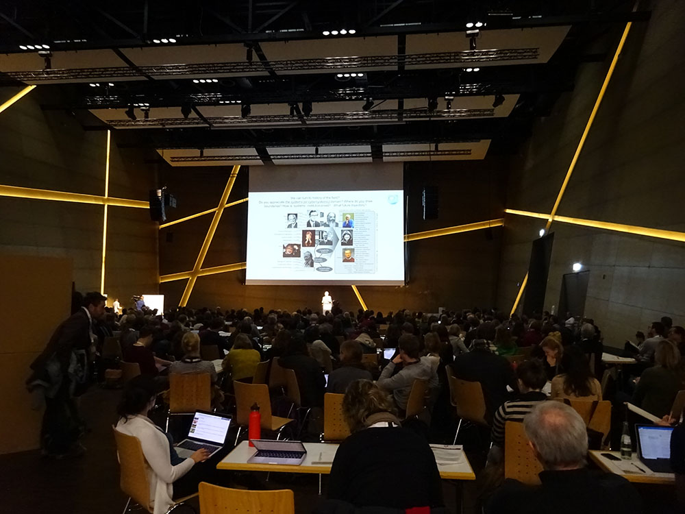
Michaela and Shintaro participated at the conference
Leverage Points 2019 in the context of sustainability research, system thinking,
resilience, policy making etc. Shintaro talked about “Learning the Complexities of Commoning. Playful Agent-Based Modeling as Thinking-Toys
for Urban Commoners” and Michaela about “Unsettling design - Material Encounters and Relational Practices”.
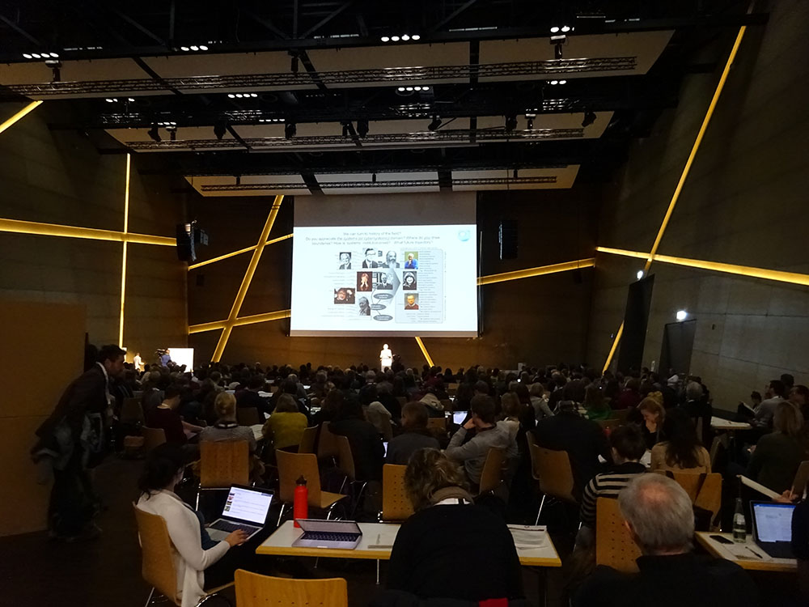
Michaela and Shintaro participated at the conference
Leverage Points 2019 in the context of sustainability research, system thinking,
resilience, policy making etc. Shintaro talked about “Learning the Complexities of Commoning. Playful Agent-Based Modeling as Thinking-Toys
for Urban Commoners” and Michaela about “Unsettling design - Material Encounters and Relational Practices”.
Feb 2019, Transmediale
 We participated at transmediale 2019 in Berlin with a
conversation panel
. We are currently preparing a transcript of the audio recording. The conversation addressed the potential entanglement of technologies with alternative forms of living together from
different scales and levels. We also tried to discuss the affective and fantastic ingredients of commoning with tech – such as the
phantasms of decentralization. With our great team and
John Evans and
Cade Diehm.
We participated at transmediale 2019 in Berlin with a
conversation panel
. We are currently preparing a transcript of the audio recording. The conversation addressed the potential entanglement of technologies with alternative forms of living together from
different scales and levels. We also tried to discuss the affective and fantastic ingredients of commoning with tech – such as the
phantasms of decentralization. With our great team and
John Evans and
Cade Diehm.
A first model about work time organization (Ämtli-Manager), 11.2018
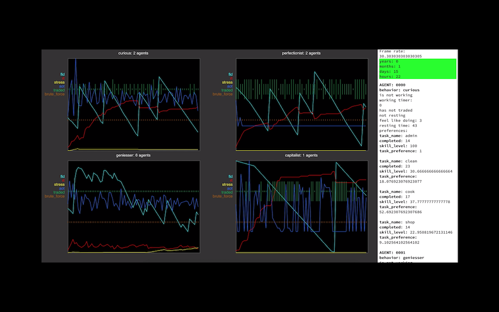
 With this agent-based model, we study the phenomenon of commoning (sharing common resources in a durable way) in the context of
sustainable living initiatives and co-housing projects in Switzerland. We focus on the distribution of working time that members
voluntarily contribute to community life. When are they feeling their contribution is fair? Are the others also behaving fairly?
How can we make sure urgent tasks are done? What are the tipping points in agents behaviour? What tipping points can we observe on
the level of the community?
With this agent-based model, we study the phenomenon of commoning (sharing common resources in a durable way) in the context of
sustainable living initiatives and co-housing projects in Switzerland. We focus on the distribution of working time that members
voluntarily contribute to community life. When are they feeling their contribution is fair? Are the others also behaving fairly?
How can we make sure urgent tasks are done? What are the tipping points in agents behaviour? What tipping points can we observe on
the level of the community?
The model is informed by our discussions with three co-housing initiatives (Warmbächli, LeNa and NeNa1), conducted in April 2018.
We identified an interest in establishing and tracking fair division of work among the members, while at the same time not wanting
to be too intrusive on member’s privacy and individual contribution. Some questions we retained are “how much would it cost to not
clean the kitchen when it is your turn to do it?” (NeNa1) and “How to measure how much volunteering time each member needs to contribute
to the community?” (LeNa).
Ämtli manager is one complex model that addresses these questions. It is a system that identifies tasks that need to be done urgently
(looking at how much time has passed since the task was done) and finds community members that could take up a task and acquire right to
rest and relax. They, in return, can accept or refuse to take up the task - a decision based on both the amount of resting time the
community member has acquired and the interest they have in doing that particular task. Agents have different personalities which
determine their strategy for accepting or refusing tasks: they can be “curious” or “perfectionist”, “geniessers” or “capitalists”.
Four tasks that describe common life appear in the model: ‘food depot management’ (‘‘Lebensmitteldepot’), ‘common kitchen maintenance’
(‘Großküchendienst’), ‘social work’ (‘Soziales’) and ‘facilities duty’ (‘Raumpflege’). A complex system of exchange of free time for work,
combined with agents’ personalities, incentivises agents to pick up tasks and have the household running properly.
Fairness is measured in function of stress and forcing the agents are feeling. If all agents refuse to take up a task, one will be
forced and will therefore start feeling stressed. When that agent uses some of their resting time, the stress will decrease. If they
do not have any, stress level will grow. Depending largely on the composition of the community in terms of agents personality, brute
forcing will occur more or less often, affecting stress level of the community and signaling its dysfunctionalities (when agents need
to be forced, we can assume common facilities are taken care of to a bare minimum).
The model outputs data that consist of time-based readings of states of agents' parameters. We experimented with different modes of
visualisation of this model, looking at it historically, so that we can identify emergent behaviours and tipping points. We also
looked at the data from the points of view of community members, tasks that need to be done and the whole environment (micro- and
macro-views). Visualization remains an important aspect of this work.
We can present some preliminary insights and findings already. For example, when all four types of community members are equally present,
it tends to happen that the stress of all agents increases, except for those that we named “capitalists” - their stress stays at a
reasonably low level and they are rarely “brute forced”. Contrarily, in a society made only of “geniessers”, stress stays at a typically
low level. We can interpret this as a sort of recommendation for the behaviour in the community (be all geniessers) or community
composition, although this would be rather far-fetched. We expect to observe more such patterns and tipping points when running the model
in the future.
Oct-Dec 2018, Data Visualization collaboration with EPFL students
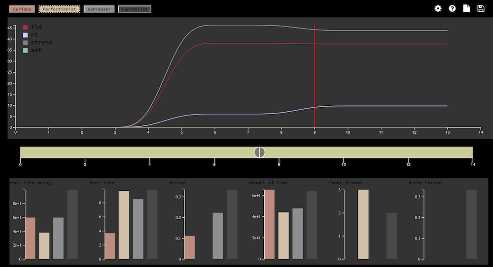
We invited a team of computer science students from EPFL to create a visual interface for the Ämtli-Manager. They came up with some interesting propositions and produced an experimental 4-window interface for observation of agents behaviour. The project was realized within the master course on Data Visualization. We would like to thank the course teacher, Kirell Benzi for his support in getting the students interested to work with us.
Dec 2018, Talk in Belgrade
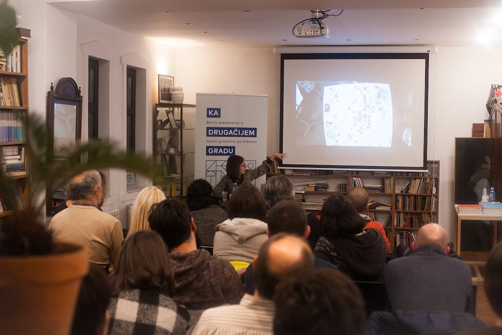
Selena gave a lecture within the series “Towards a Different City” (Ka drugacijem gradu) organized by Ministarstvo Prostora at CZKD, Belgrade. She talked about “Articulations of common through technology and design”, discussing, among other things the role of the ABM and games in Toys for Commoning project.
Nov–Dec 2018, Ämtli-Manager Workshops
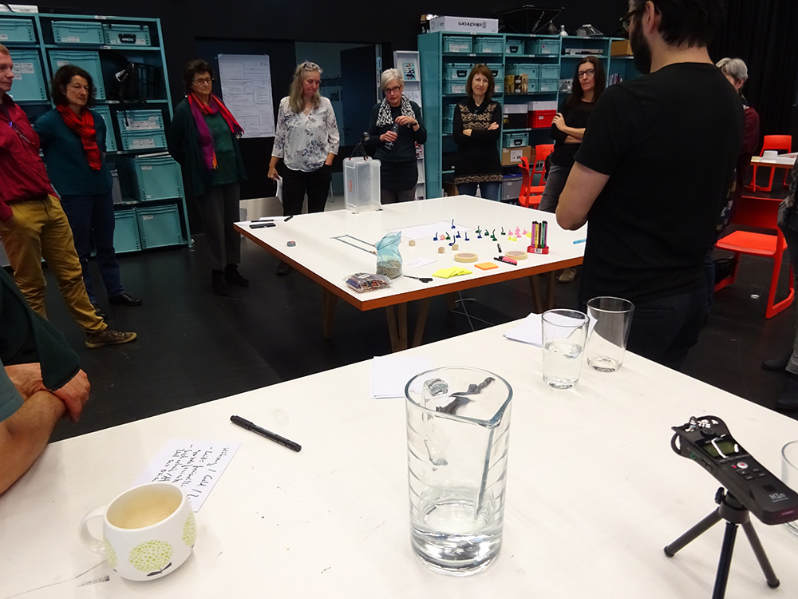
We continued our collaboration with the co-operatives and conducted two workshops, where we tested the first
version of our
Ämtli-Manager (working title) and collected feedback concerning the topic of working time organization.
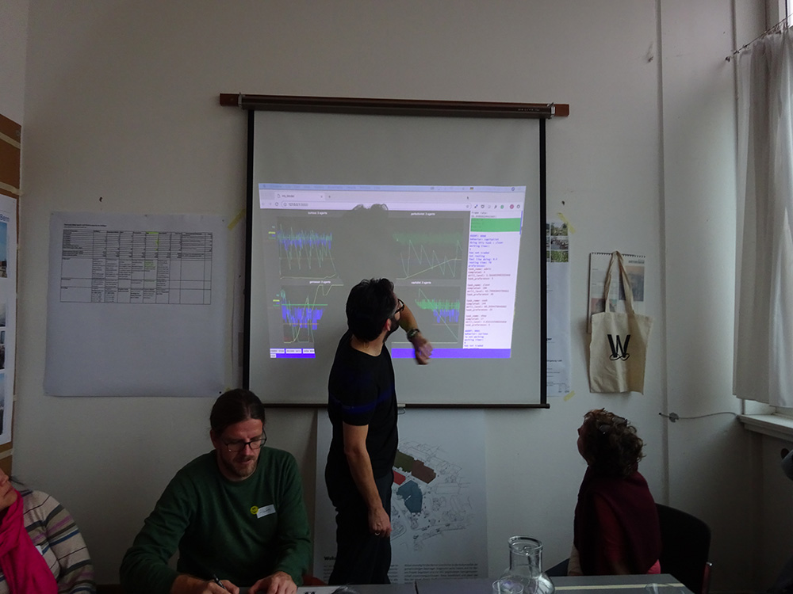

Nov–Dec 2018, Micro Residency 1a
In this first micro-residency designers
Sarah Hermanutz
and
Andreas Rau
joint forces with researchers Desiree Förster and Michaela Büsse to inquire ways to create an immersive experience
of a complex system,
in particular climate change. Desiree’s doctoral research on atmospheric media and Andreas Rau’s and
Sarah Hermanutz’s interest in virtual reality temporarily complement our team’s skill set to explore how one can
relate to different levels of magnitude and entanglement. The residency will continue in February 2019 and
lead on an interactive installation to be exhibited at the Critical Media Lab.
Nov 2018, Workshop with Hyperwerk
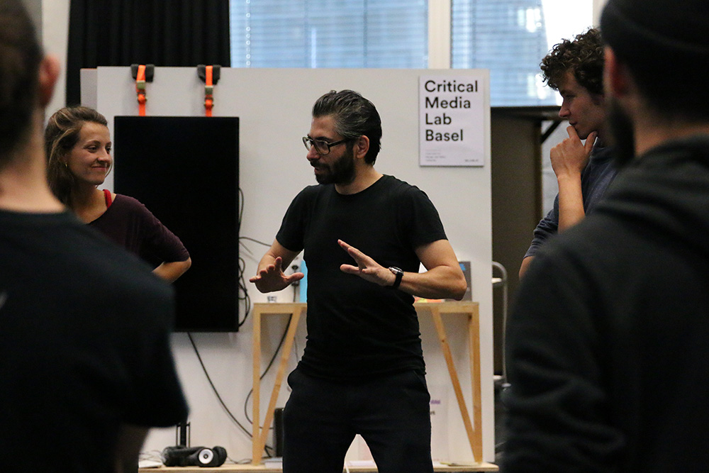
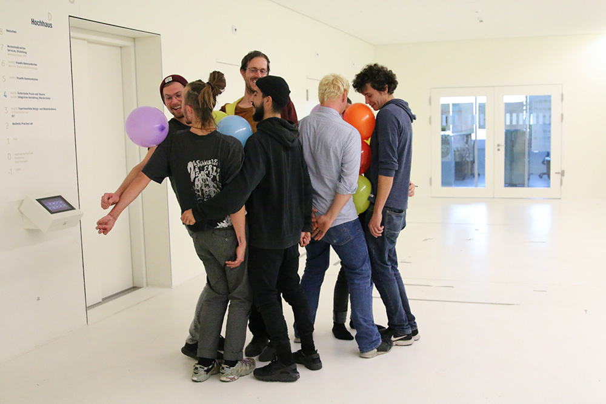
Emergent gameplay is a central principle of game design. In the game design workshop
“Organize
Yourselves Or You Will Be Organized”
we experimented with creating simple rules that generate more complex emergent patterns of self-organization and
creating feedback
loops within the game. The workshop was conducted by Viktor and Shintaro with students of
Hyperwerk.
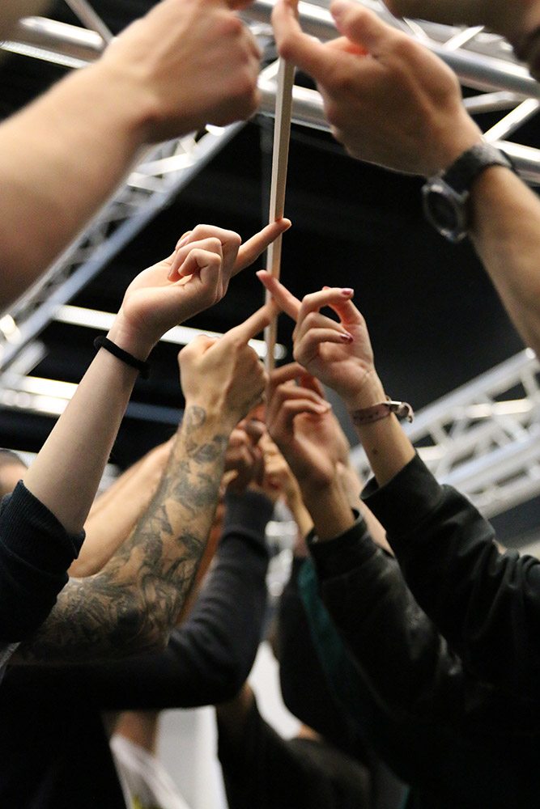
Nov 2018, Istanbul Design Biennial
Viktor joined “Negotiating value at the School of Fluid Measures” with Berlin-based designer Judith Seng. They
explored the fluidity
of value in negotiations embedded in complex and ever-changing contexts. Judith took part at a
A School of Schools, the 4th Istanbul
Design Biennial, resulted in the seventh iteration of her ongoing Acting Things series. A transcript of the panel
discussion appeared
in the #21 of the
Designo Magazine.
 Credit: ACTING THINGS VII - School of Fluid Measures by Judith Seng
Credit: ACTING THINGS VII - School of Fluid Measures by Judith Seng
Sep 2018, Playtest in Bristol
'Iris & Black Box' is a playful setup based on the agent-based model 'Ämtli Manager' that allows humans to become
one agent among
many computer agents. The prototype setup consisting of a modified version of the Ämtli Manager ABM and a physical
game console
for the human player was first tested at
IGLab in Bristol.

May 2018, Commoning in Basel
At
this podium event
under the heading of "Commoning", several current projects from Basel that deal with collaborative
working, living, and thinking were presented. With Christian Mueller (Zukunft.Klybeck) Roger Portmann (LeNa) Laura
Pregger (Hyperwerk).
Denkspielzeug für Commoning
Die gemeinschaftlich-nachhaltige Nutzung und Organisation von Ressourcen ist komplex. Mit einem Fokus auf
alternativ-utopisch
inspirierte Stadt-Nachbarschaften in der Schweiz schlägt das Forschungsprojekt eine exemplarische Untersuchung und
gestalterisch-explorative
Entwicklung medialer Denkwerkzeuge vor, mit deren Hilfe die Komplexität solcher Prozesse besser veranschaulicht
werden
können.
Gemeinschaftlich-nachhaltig genutzte Ressourcen, wie etwa Lebensmittel oder kommunikative Infrastrukturen wie
Wifi,
werden Commons genannt. Commoning meint die Aktivität des gemeinsamen Teilens dieser Ressourcen. Der durch
zahlreiche
alternativ-utopisch inspirierte Projekte formulierter Anspruch, infrastrukturelle Aspekte des urbanen
Alltagslebens
durch Commoning selbstverantwortlich und alternativ zu gestalten, wirft einige Fragen auf. Denn aufgrund der hohen
Komplexität,
die mit der gemeinschaftlichen Nutzung von Ressourcen bisweilen einhergeht, kann das einzelne
Gemeinschaftsmitglied
sein Commoning und dessen Konsequenzen oft nicht bis ins letzte Detail und in all seinen Konsequenzen durchdenken.
Besonders
wenn es um ein verstehendes Erfahren unvorhersehbarer, komplex-adaptiver Vorgänge geht, kann er oder sie deren
Ablauf,
so unsere These, rein intuitiv und ohne die Hilfe veranschaulichender medialer Denkwerkzeuge, wie computerbasierte
Modelle
oder Szenarien, nicht mehr vollständig erfassen.
Aus diesem Grund wird im engen Austausch mit den Mitgliedern der schweizerischen Stadt-Nachbarschaftsprojekte
NeNa1
in Zürich, LeNa in Basel und Warmbächli in Bern eine mobile, digitale Software-Anwendung entwickelt und erprobt.
Dabei
geht es um die spielerische Anregung und Erschließung neuer Denk- und Handlungsräume im Bereich des Commonings.
Denn,
auf diese Weise – so unser Ziel – könnten sich neue Wege für zukünftige gesellschaftliche Teilhabe- und
Transformationsprozesse
eröffnen.
Das vierjährige Projekt, in dem sowohl geistes- und sozialwissenschaftliche als auch gestalterische Methoden
kombiniert
werden, verfolgt zentral folgende Leitfrage: Wie lässt sich durch das gemeinschaftlich-experimentelle Gestalten
und
Entwickeln eines digitalen Spielsystems das Nachdenken über die intuitiv oft nicht nachvollziehbare Komplexität
des
Commoning anregen und Komplexität so spielerisch versteh- und besser verhandelbar machen?
Partner und Fundierung
Dieses Forschungsprojekt wird vom “Schweizerischen Nationalfonds zur Förderung der Wissenschaftlichen Forschung”
(SNF Nr.
175913, von 01/2018 bis 12/2021) unterstützt. Durchgeführt wird es am Institut für Experimentelle Design- und
Medienkulturen
und im Critical Media Lab an der Hochschule für Gestaltung und Kunst FHNW in Basel. Hauptprojektpartner sind Lena,
Warmbächli
und NeNa1.
Team
Dr. Viktor Bedö
Viktor ist ein Senior Reseacher im Team,
Gründer
des “The Street Game Lab Tacit Dimension” und freischaffender Innovationsberater. Er promovierte an der Humboldt
Universität
Berlin und an der Universität Pécs (2011) in Philosophie.
Lena Frei
Lena studiert Visual Communication and Iconic Research (MA) an der HGK FHNW. Sie hat einen BA in
Medienwissenschaften/Philosophie
(Universität Basel). In unserem Team hilft sie bei der Gestaltung und in anderen Bereichen.
Michaela Büsse
Michaela ist Kuratorin, Redakteurin und
Doktorandin
in unserem Team und zugleich an European Centre for Art, Design and Media based Research (ECAM) der HGK FHNW.
Yann Martins
Yann arbeitet als
Kreativ-Programmierer
in unserem Team. Er erwarb seinen Master in Visual Communication and Iconic Theory an der Hochschule für
Gestaltung
und Kunst FHNW.
Dr. Shintaro Miyazaki
Shintaro ist Medienwissenschaftler und
experimenteller
Gestalter. Er ist Gesuchsteller und der Projektleiter. Promotion in Medientheorie an der Humboldt Universität zu
Berlin
(2012).
Dr. Selena Savić
Selena ist Designforscherin und ist als
Postdoc
im Team. Sie hat ihr Doktorat am EPFL (Lausanne) und am Instituto Superior Técnico (Lissabon) abgeschlossen.
Februar 2018, Masquerade for Commoning
Unser Team nahm an der Transmediale 2018 (mit dem Thema “Face Value”) teil und führte am Sonntag 4.
Februar,
den Workshop
"Masquerade for Commoning"
durch. Da unser Projekt zu diesem Zeitpunkt erst in den Startlöchern stand, nutzten wir den Anlass für eine
teamfördernde
Zusammenarbeit mit unseren Gästen Felix Gerloff aus dem Critical Media Lab und Kevin Rittberger, der schon im
Jahre
2015 in das Projekt "Syntegrity" involviert war.
April 2018, Kennenlern-Workshops
 Wir führten erste Workshops mit unseren Projektpartnern Lena (Basel), Warmbächli (Bern) und NeNa1 (Zürich) durch
und erprobten
das artefaktbasierte Diskussion von Problemen. Viktor entwickelte eine passende Workshop-Methode, die sich als
durchaus
produktiv herausstellte.
Wir führten erste Workshops mit unseren Projektpartnern Lena (Basel), Warmbächli (Bern) und NeNa1 (Zürich) durch
und erprobten
das artefaktbasierte Diskussion von Problemen. Viktor entwickelte eine passende Workshop-Methode, die sich als
durchaus
produktiv herausstellte.
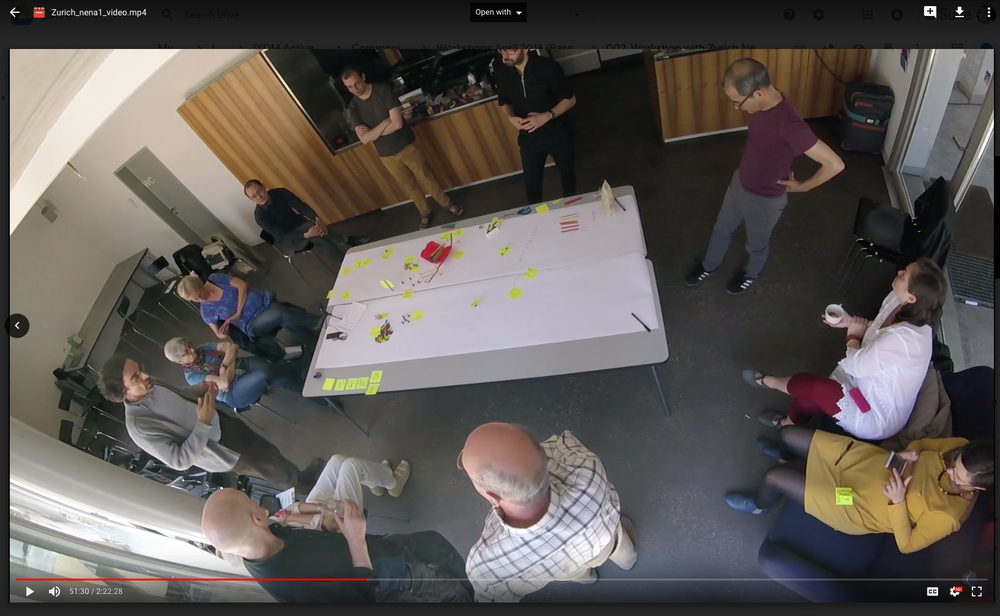
Mai 2018, Nachbesprechung und weitere Schritte
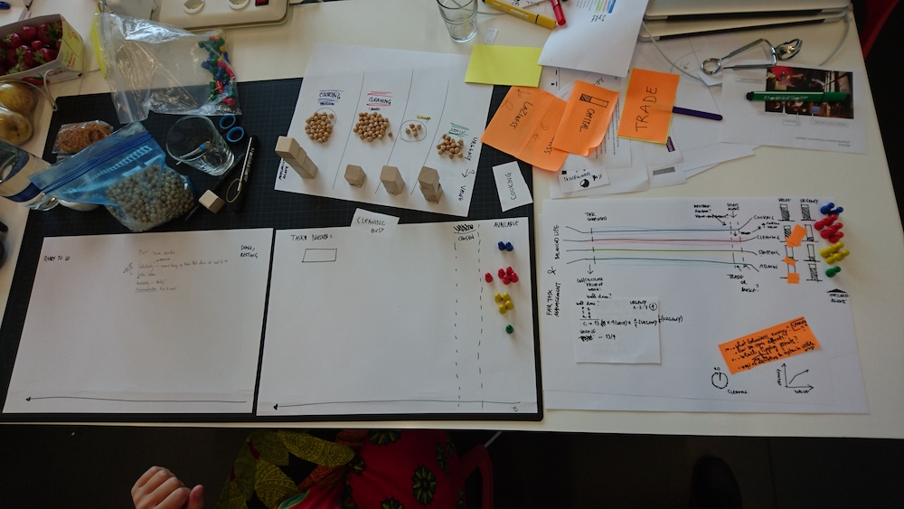
Nach den intensiven “Kennenlern-Workshops” mit den drei Projektpartnern waren wir ziemlich erschöpft, erholten uns
aber schnell
und setzten uns an die Nachbesprechung und dem Entwickeln erster Ideen für weitere Schritte (ein erstes
agentenbasiertes
Modell, ein fragmentiertes Spiel-Szenario und mehr Ideen für weiterführende Workshops).
April 2018, Kick-Off Tagung
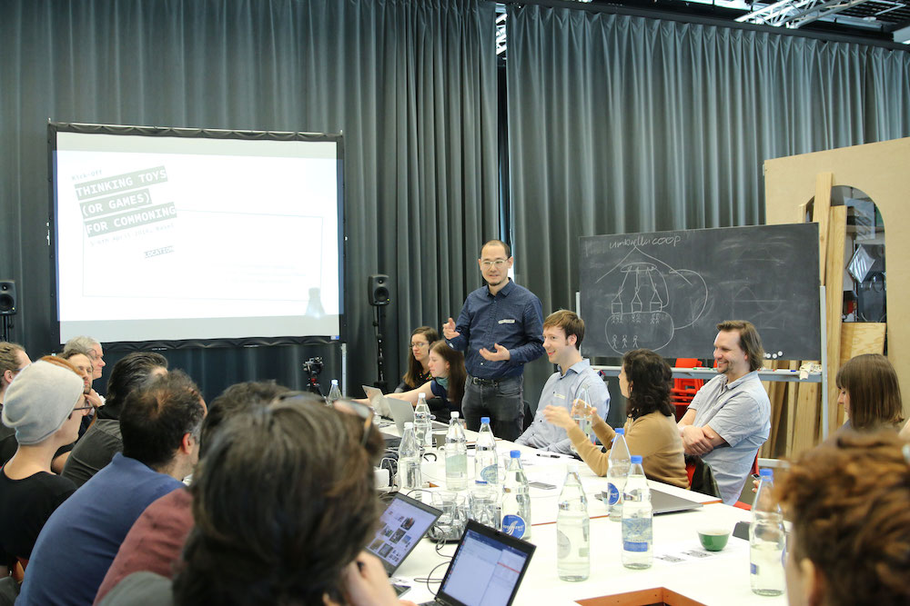
Um unseren Denkraum zu öffnen und uns mit möglichen Fachkollegen zu verbinden, organisierten wir eine Kick-Off
Tagung rund
um die Themen “commoning”, “gaming” und “modelling”. Unsere zentrale Frage für die Diskussionen lautete: Wie
können
spielerische Einrichtungen uns helfen, die Komplexität von gemeinsamem Wirken in urbanen Nachbarschaften zu
verstehen,
zu bewältigen und kritisch zu überdenken?yla>
Am ersten Tag des zweitägigen Workshops konnten die Teilnehmer ihre Perspektive bezüglich der vorhin
gestellten
Frage erklären, dies unter Einbezug und Vorstellung von verwandter Arbeit und Projekten. Am zweiten Tag
diskutierten
und tauschten wir Ideen, Konzepte, Arbeitstechniken und Herangehensweisen innerhalb des Dreiecks von commoning,
modelling
und playing aus, begleitet von spielerischer Konversation und der Entwicklung von Prototypen.
Teilnehmer/Innen: Adam van Heerden, Bruce Edmonds, Gabriele Ferri, Geeske Scholz, Gilly Krajevsky, Ivo Balmer,
Jelena
Viskovic, Mary Dellenbaugh-Losse, Shusha Niederberger, Panayotis Antoniadis, Paul Chaney, Sebastian Quack, Roger
Portmann
and Tobias Willimann.


May 2018, Debriefing + Next Steps
After the intensive "First Contact" workshops with the three co-operatives we were quite exhausted, but recovered
soon with
a debriefing, developing first ideas for next steps (first agend based model, a fragmented play/game scenario,
more
ideas for catch-up workshops).
April 2018, First Contact
We conducted first workshops with our project partners, Lena (Basel), Warmbächli (Bern) and NeNa1 (Zurich) and
started exploring
artefact based problem addressing. Viktor designed a adequate workshop method, which proved to be quite
productive.
Our first models, 05.2018
Schelling's Model of Segregation
Here a description of
the
model
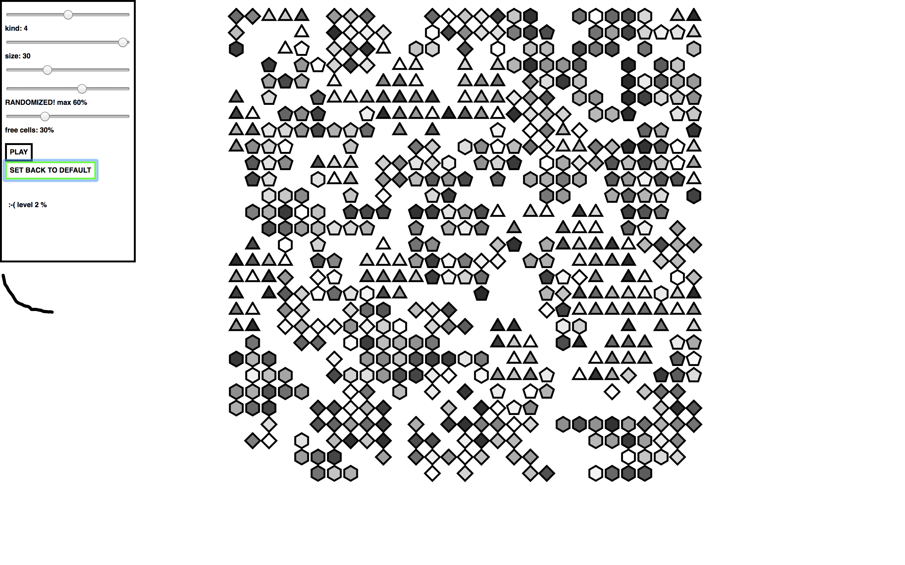
Predator VS Prey Model
Here a description of the model
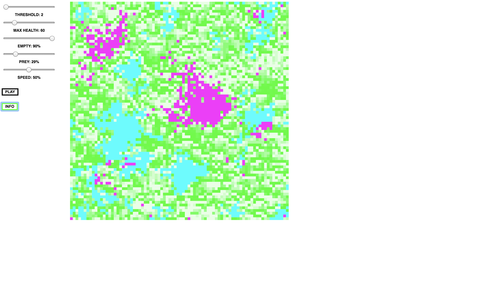
Coward VS Heroes Model
Here a description of the model
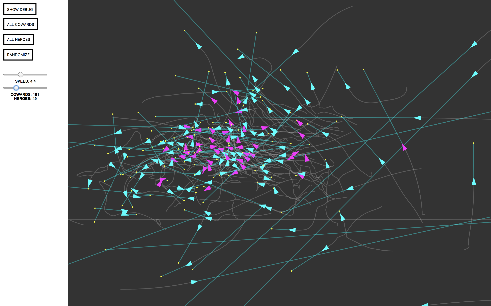
April 2018, Kick-Off Meeting
In order to open up our thinking space and connect with possible academic peers, we organised a kick-off meeting
around "commoning",
"gaming" and "modelling". Our central question for the discussions was: How could playful setups enable grasping,
negotiating
and thinking critically about the complexities of commoning in urban neighborhoods?
On day one of the two-day workshop, participants shortly presented their perspective on the above question by
introducing
some of their related work or projects. On the second day we discussed and exchanged ideas, concepts, tool-sets,
and
approaches within the triangle of commoning, modeling and playing by a playful conversation and prototyping
format.
Participants: Adam van Heerden, Bruce Edmonds, Gabriele Ferri, Geeske Scholz, Gilly Krajevsky, Ivo Balmer,
Jelena
Viskovic, Mary Dellenbaugh-Losse, Shusha Niederberger, Panayotis Antoniadis, Paul Chaney, Sebastian Quack, Roger
Portmann
and Tobias Willimann.
Team
Dr. Viktor Bedö
Viktor is a senior researcher in the team,
founder
of the street game lab Tacit Dimension and freelance innovation consultant. He obtained a PhD in philosophy at
Humboldt
University Berlin and University Pécs (2011).
Lena Frei
Lena studies Visual Communication and Iconic Research (MA). She has a BA in Media Studies/ Philosophy (University
of Basel),
is our in-team co-designer and is helping in other matters too.
Michaela Büsse
Michaela is a curator, editor and a junior
researcher
in our team as well as a PhD candidate at the European Centre for Art, Design and Media based Research (ECAM) in
Basel.
Yann Martins
Yann works as a creative coder in the
team.
He graduated in Visual Communication and Iconic Theory (MA) from the Basel School of Design.
Dr. Shintaro Miyazaki
Shintaro is a media scholar and
experimental
designer. He is the principal investigator and project leader. He obtained a PhD in media theory at
Humboldt-Universität
zu Berlin (2012).
Dr. Selena Savić
Selena is a designer researcher, scholar
and
a post-doctoral researcher in the team. She obtained a joint PhD by EPFL (Lausanne) and Instituto Superior Técnico
(Lisbon).
Feb 2018, Masquerade for Commoning
Our team took part at transmediale 2018 face value with the workshop
"Masquerade for Commoning"
which we held on Sunday 4th of Feb. Since we then just started, we used this lovely occasion as a team building
effort with
guest colleague Felix Gerloff from the lab and external guest Kevin Rittberger. Kevin was involved earlier in 2015
with
"Syntegrity".
Here a more detailed announcement of the workshop: Masquerade for Commoning wants to encourage you to tackle
face
value – Transmediale 2018’s thought-provoking trigger – via modulating the idea of the mask. Would a playful
masquerade
be helpful in order to discuss how we could respond to current practices of taking things at face value too fast
and
at the same time enable us to self-critically recognize moments when we also take our own ideals, values, and
utopias
at face value? What kind of biases and exploitative mechanisms are involved when we think, for example, about
alternative
models for creating value together? How would the masquerade unfold if we modulated face value with commoning?
Commoning => a verb expressing the joint action of creating things together by drawing on a network of human
and
non-human relations created with the expectation of mutual care, aid, benefits and a shared understanding that some
things
could belong to all of us.
Mask => an object or filter that can modify an identity in order to lie about it, take on a role, represent
another,
assume a collective identity, make identities equal, abstract an identity, reveal an identity, take possession of
the
mask's powers...
Masquerade => a joint action of assuming and executing modified identities which usually involves the creation
of
new relationships between masked identities and produces a complex situation of co-dependencies.
Masquerade for Commoning suggests to understand face value spectrally, not only dialectically and reconsider
current
models of valorization as producers of unwanted artifacts of our agricultural software that has been running for
over
five thousand years. We want to modulate and synthesize the mask, the act of masking, the masquerade, faces and
values
with cultural practices of commoning. The mask as a tangible artifact could enable different modes of
understanding,
enacting and modelling the dynamics that is at work in commoning. Performed by the workshop participants or in a
real-life
situation, the Masquerade for Commoning might shed new light on different constellations, social relations and
dependencies
between individual agents and their environments.
In our times, we – you and us – are confronted with a difficult riddle: How can we imagine and build a
radically
different system of valorization and distribution while facing the constraints of current (neoliberal) geopolitical
powers?
Commoning, at face value, might be a simple and evident solution but it surely involves drama. More than a
political
theory or philosophy, commoning is an active, living process which involves a complex ecosystem of things, persons,
infrastructures,
resources, technologies, and architectures. Here, the mask comes into play almost seamlessly — etymologically
related
to ghosts and darkness and even mockery, masks have evolved into agents of impersonation, of taking on a role in a
drama
or performance. Masks are used to abstract certain aspects of an individual but also to conjure more-than-human
superpowers.
Masks are old artifacts humans used since immemorial times in rituals and on special occasions. A flat mask,
moreover,
as provided here, has a back and a front side. Thus it embodies the principle of binaries. Would that be a pathway
to
digitality?
Join our session to collaboratively and playfully discuss, sketch, design masks and model constellations of
commoning.
The blank mask accompanying this print (PDF output) is our invitation to the first Masquerade for Commoning at the
last
day of Transmediale 2018 (Feb 4th (Sunday), 14:00–17:00, K2, HKW).
Masquerade for Commoning, 02.2018
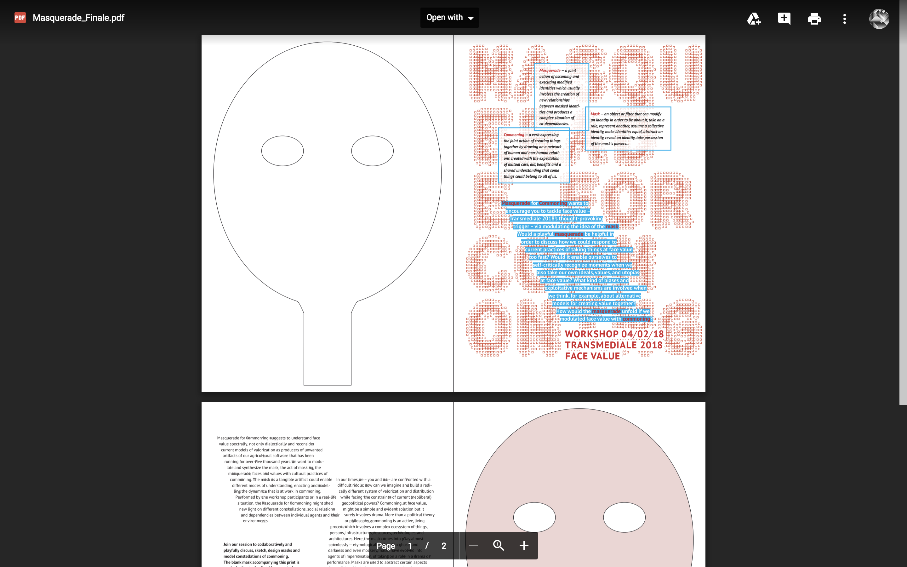 Printed matter. transmediale 2018 (
PDF).